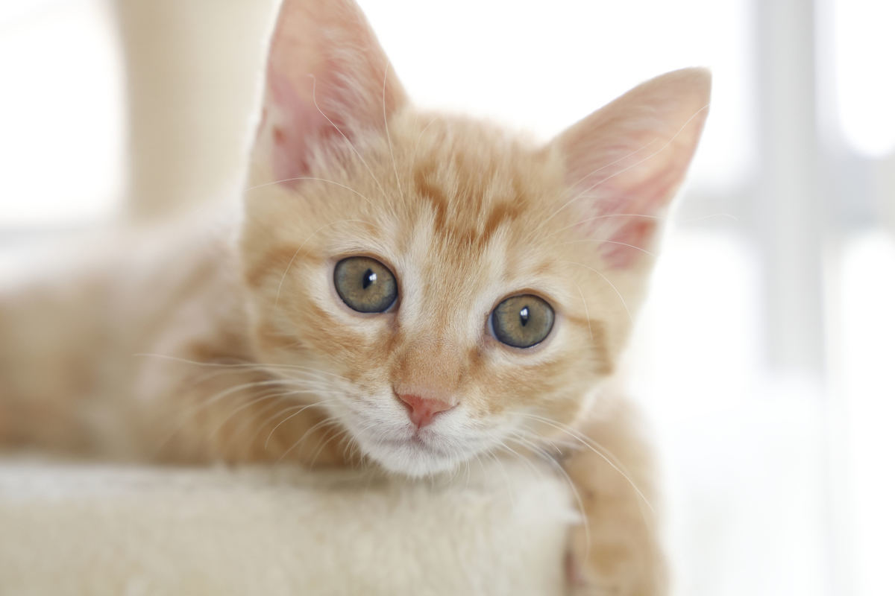
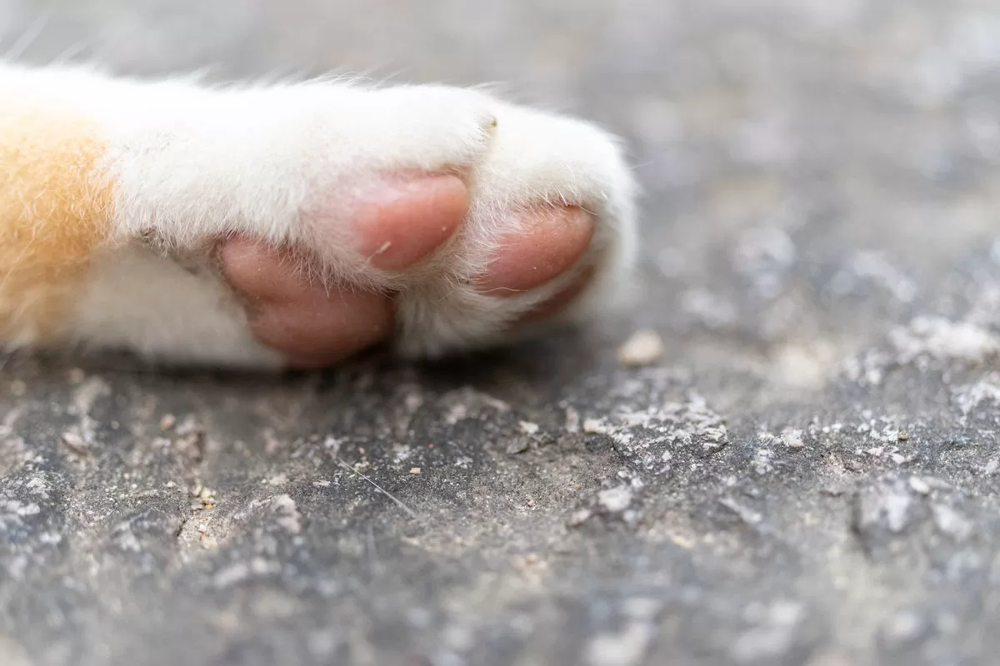
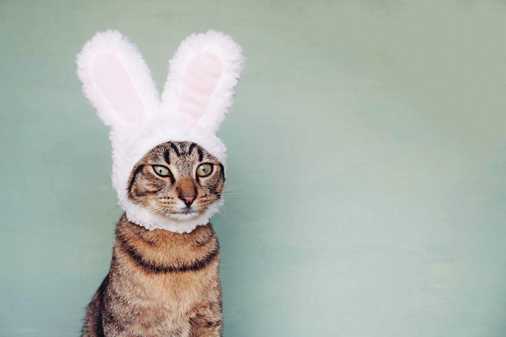

なぜ猫はかわいいのか- 理由を獣医師がマジメに解説してみた
猫を見ているとある疑問がわいてきます「なぜこんなにも猫はかわいいのか?」。大きな目、ふわふわな毛並み、愛くるしい動き、肉球、頭からしっぽまで猫は魅力満載です。こんなにもかわいいパーツがそろった動物は猫ぐらいではないでしょうか。 今回はマイナビニュース男女会員1013人にアンケートを実施し、猫がかわいいと思った点とその理由を聞いてみました。

猫がかわいい理由（仕草、毛並み、におい、肉球など）
なぜ猫はかわいいのか 「なぜ猫がかわいいのか」という問いは非常に難しい質問ですが、今回は獣医師である私がかわいいと感じたポイントについて考えてみました。
猫の目が大きいから可愛い
猫の最大の外見上の特徴は大きな目でしょう。人間でも目が大きい人は感情表現が豊かで、好意をもたれやすいことがわかっています。また、殆どの哺乳類の赤ちゃんは目の割合が大きく、本能的に目が大きいものを守りたいと感じるという意見もあります。
猫の目はまんまるです。もしも人間が猫の目と同じ比率の大きさの目を持っていたとしたら、ピンポン球大の大きさになります。どんなに目が大きな人でもそこまで大きい人はいませんよね?
なお、猫の目が大きいのは夜間に狩りをするのに役立つためです。夜の間は、瞳孔(黒目)を目の大きさいっぱいまで開き、少ない光で獲物を捉えることができます。人間とは違い、日中の明るいときに瞳孔が縦長になるのは、森や草原の草木の間から獲物を覗くためだと言われています。
また、猫の虹彩(目の色がついている部分)は非常に美しい色をしています。ゴールド、ブルー、エメラルド等、猫によって様々。虹彩の色によって猫の印象が変わってきます。
大きい目が好きでかわいいと思う理由
・宝石のように輝いており、見つめられるだけでドキドキする。（68歳：男性）
・人懐っこいので可愛いと思う。（26歳：男性）
・眼がかわいいのでそう思うから（26歳：男性）
・眼の表情から感じます。（29歳：女性）
・愛嬌のある眼差しが好き（37歳：男性）
・くりくりとした大きい目が一番の魅力的だと思うから。（46歳：男性）
・目がくりくりしていて可愛いから（43歳：女性）
・夜になると目玉が真ん丸になるところ（54歳：女性）
・全てがカワイイ、動かなくてもカワイイ（38歳：女性）
猫の肉球がかわいい
猫の肉球は、柔らかさとその形のかわいらしさから多くの人々をとりこにしています。
猫の肉球
猫は、肉球のおかげで足音を立てずに獲物に近づくことができます。爪を出し入れできるのも猫科の特徴で、爪を閉まった状態だと肉球のみで歩くことができ、殆ど足音がたちません。

肉球が好きでかわいいと思う理由
・肉球の触り心地がたまらないですね〜。（24歳：女性）
・肉球は恥ずかしがってなかなか見せてくれないので見れると癒されるから。（29歳：男性）
・猫の肉球がぷにゅぷにゅで好き。（34歳：女性）
・やわらかい感触が好き （34歳：男性）
・タッチした感覚が最高 （39歳：男性）
・雪道を歩いた時の肉球の跡がかわいい（39歳：男性）
・犬とは違った形と大きさだから（40歳：男性）
・全部選択したかったが一つしか選べなかったので肉球にした。（とにかく猫は可愛い！（40歳：男性）
・3匹飼ってますが、肉球がぷよぷよしていて気持ちがいいから。（40歳：男性）
・デフォルメされることが多い部分なので （41歳：男性）
・見た目はもちろん可愛いが肉球のプニプニがもっと可愛いと思うから（41歳：男性）
サラサラの毛並み
猫の毛並みが綺麗なのは、日頃のお手入れが行き届いているからです。猫は元来綺麗好きな生き物なので、暇があれば毛繕いをします。そのためいつ触ってもサラサラです。毛並みが悪いときは体調が悪いサインになるので、様子をきちんと見ておく必要があります。
毛並みが好きでかわいい理由（アンケート結果）
・ふかふかしているから。（24歳：女性）
・毛並みが好きです。じゃれていると遊べます。（26歳：男性）
・毛並みを自分で毛繕いするところ（27歳：女性）
・ふわふわしていて触りたくなる。（29歳：女性）
・触っているときの感触がとても好きだからです。（34歳：女性）
・フォルムがまるっとしていて可愛い（39歳：男性）
・モフモフの手触りで癒されるから（47歳：男性）
・毛がふさふさしているから。 （29歳：男性）
・猫を撫でたときの感触が良い。（37歳：男性）
いいにおい
また、草の陰や、木の上に待ち伏せして狩りをする猫は動物の中では体臭が少ないです。ひなたぼっこしている時間も長いためか、私は猫を嗅ぐと太陽に干した布団の臭いに似ているなと感じます。
においが好きでかわいいと思う理由（アンケート結果）
・パンみたいな甘い匂いがするから（37歳：男性）
ふにゃふにゃボディがすばらしい
猫の筋肉は、他の動物と比べても圧倒的に柔らかいです。寝ているところを触るとふにゃふにゃですし、リラックスした状態で持ち上げると想像以上にのびます。これは筋肉が柔らかいのと、関節の可動域が広いからです。猫が音をたてずに歩き、高い木にも登れる瞬発力はこの柔らかい筋肉と関節のおかげです。
猫の形が好きでかわいいと思う理由（アンケート結果）
・かたちやフォルムがあいらしい（29歳：男性）
・猫がかわいいのではなく、かわいい要素を全て詰め込んで作られた生物が猫なのである（35歳：女性）
・とにかくフォルム全体が可愛い（36歳：男性）
・柔らかく、のびのびした体が魅力的だと思うので。（38歳：男性）
・全部がかわいいとしか言いようがないです。（40歳：男性）
・猫のフォルムがかわいらしいから。（43歳：男性）
・人間は丸いものを見るとかわいく感じる生き物だから。（50歳：女性）
・モフモフの体型と歩き方（57歳：男性）
・体の大きさ、身のこなし、食べ物のおねだり、など。（77歳：男性）
・猫の体はしなやかで温かい感じがするのと、小型の動物と言う点が理由。（66歳：男性）
・からだを選びましたがネコそのもの・全体像好きです。見た目も可愛いし甘える姿も冷静沈着な感じもいいですね～。（57歳：女性）
鳴き声がとっても可愛い
猫の鳴き声は、国によって印象が違うようです。日本では「ニャー」ですがアメリカでは「meow(ミャオ)」、中国語では「mi mi(ミーミー)」等と、微妙に音が違うようですね。ただ、共通しているのは「猫の鳴き声はかわいい」と捉えられていることです。
鳴き声が好きでかわいいと思う理由
・餌をねだる時や遊んでほしい時の鳴き声がかわいい。（35歳：男性）
・声のトーンに癒されるから（39歳：男性）
・赤ちゃんねこがミャーミャー泣いてるのがかわいい（40歳：男性）
・鳴き声がかわいいと思うことに理由というのはわからない。（40歳：男性）
・鳴き声が、か細くてかわいらしい（40歳：男性）
・色々な鳴き声を上がるのが可愛かったり、仕草が可愛かったり当に色々可愛いと思います。（41歳：男性）
・子猫の鳴き声は言わずもがな、大人猫になっても甘えてくる時の声など。（46歳：男性）
・甘える時の鳴き声が特に可愛いと思う（49歳：男性）
・猫の顔や仕草も可愛いと思いますが、最大の理由１つだけということだったので、鳴き声を選びました。「ニャ～」というあの鳴き声は本当に可愛らしくて、癒されます。声自体も可愛くて、本当に大好きです。（58歳：女性）
・子猫の鳴き声は最高いやされる（55歳：男性）
・猫なで声と比喩されるくらい声質がペットの中でも一番可愛い。（59歳：男性）
